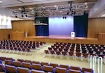
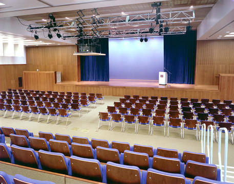
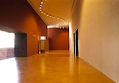
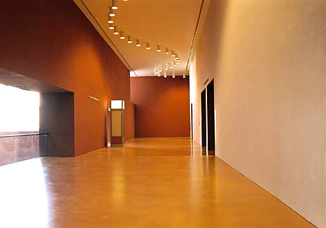
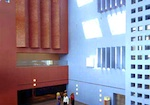
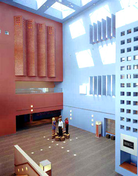
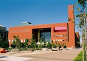
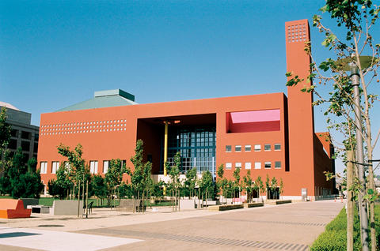
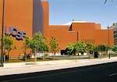
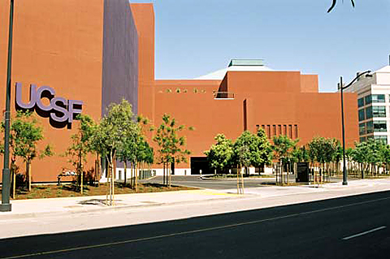

San Francisco is the birthplace of the web revolution. Ruby powers many new technologies, from web sites to telephony and desktop applications. Join us for two days of in-depth technical explorations of the most interesting parts of the Ruby landscape, presented by some of the top talents in the Ruby development community.
San Francisco is the birthplace of the web revolution. Ruby powers many new technologies, from web sites to telephony and desktop applications. Join us for two days of in-depth technical explorations of the most interesting parts of the Ruby landscape, presented by some of the top talents in the Ruby development community.
Registration for the second annual Golden Gate Ruby Conference is open now! Your ticket to Golden Gate Ruby Conference gets you the following:
- Admission to two days of sessions
- Breakfast and Lunch both days
- Official Conference swag
- Entry into event giveaway raffles
- Access to any after-hours events
- Access to our fantastic attendees and speakers
The conference is single-track, and we're capping it at 300 people to keep things intimate. Just like last year
we're doing 30-minute sessions so talks stay focused and interesting, with long breaks to allow time for
networking and discussion. And if you want to see what things were like last year, check out the 2009
edition of our zine, the Golden Gate Ruby Wrap
See you all there!
Event Updates
Keynote Speaker: Jim Weirich
Posted July 23, 2010
If you've done anything in Ruby, you've used software written by Jim Weirich.
Jim is known on the Ruby conference circuit for being a great speaker — informative,
entertaining, inspiring. What more could you want?
We're thrilled to announce Jim will be delivering our keynote session. For details,
stay tuned for the program announcements next week.
New Location and Dates Announced
Posted July 5, 2010
After last year's smashing success, we knew it was time to grow! After a long and
arduous search, we've got our new dates and venue all settled up: we'll be at the beautiful
Mission Bay Conference Center at UCSF on September 17 and 18. The facilities
are state of the art with plentiful power and comfortable seating, the location is just a short MUNI ride
from downtown, and it can accommodate a bigger batch of attendees.










Jim Meyer Joins the GoGaRuCo Team
Posted January 15, 2010
Jim Meyer is a Silicon Valley veteran with years of experience, and this year, he's joining the conference
planning team to help put on a fantastic show this second time around. Jim's spent time running engineering
teams at numerous fantastic Ruby and tech companies, including the likes of Scribd, LinkedIn, DreamWorks and
the Walt Disney Company! We're really glad to have him on board; 2010 is going to be great!